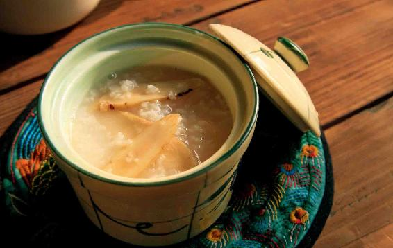
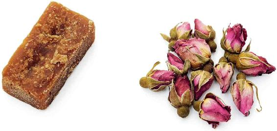
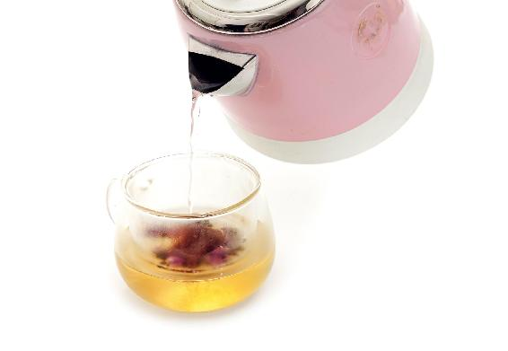
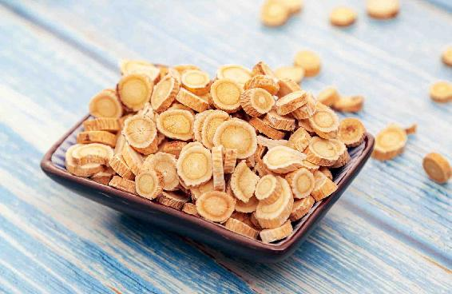

宋代大才子秦观的这首诗，写了古代养生家过三伏的讲究——要用中药（“药”）和保健饮食（“饵”）来保养。
三伏虽然热得难受，却是老天爷给我们安排的冬病夏治好时机。这段时间保养好了，冬天才更好过。
闰中伏就是中伏的第二个十天。
三伏分头伏、中伏和末伏。中伏在有的年份是十天，有的年份是二十天。如果中伏有两个十天，第二轮的十天就被称为闰中伏。
三伏为什么在有的年份是三十天，有的年份是四十天呢？这是根据立秋的时间来决定的。
三伏的计算方法比较特别，它是从每年夏至之后第一个庚日开始，过二十天到第三个庚日，这天就是入伏的时间。
那么最后一伏，也就是末伏是怎么来算呢？从头伏开始隔十天以后又是一个庚日，这是中伏的第一天，但是并不是再隔十天就是末伏，而是要看立秋的时间。
在立秋之后的第一个庚日，这个时候才是末伏。因此，从中伏的第一天到末伏的第一天，中间有可能是隔十天，也有可能是隔二十天。这就是三伏有时候是三十天，有时候是四十天的原因。
三伏选在庚日，这是非常有讲究的。庚这个天干在五行中是属金的，配的脏腑就是肺，而三伏就是我们通过肺来排毒的一个时机，因此要选在庚日。
传统的养生学所说的肺，并不只是现代医学所指的肺这个器官，它实际上指的是一个系统，包括肺、大肠、皮肤、毛孔等。所以，通过皮肤来排毒养肺就是一个很好的方法。
三伏天的养生有两个重点：一是补气，二是排毒。
三伏天补气，需要准备的原料有黄芪和大米，用来熬黄芪粥，每天早上都可以喝，可以帮助人体补气，而且会让闷热的夏天感觉比较好过。到了秋天，以前爱感冒的人，还会发现自己的抵抗力明显增强了。

原料：黄芪30克，大米50〜100克（这是一个人的量，您可以按照人口数量来加倍）。
做法：把黄芪稍微浸泡一下，然后再加大米和清水，一起熬粥。
有些家长特别关心小孩子能不能喝黄芪粥。黄芪粥是补虚的，对于气虚的人效果最好，而小孩子一般不会气虚，所以小孩不用特意喝。
但如果小孩子的脾胃虚弱，平时身体抵抗力差，只要是在他内热不重的情况下，也可以稍微给孩子喝一点儿。若是学生平时学习比较疲劳，也可以喝一点儿。
三伏天的第二个养生重点，就是贴三伏贴排毒，这是一个比较简易的引毒外出的方法。
每年三伏的时候也是医院非常忙碌的时候，如果您并没有特别的、一定要贴三伏贴来调理的严重疾病的话，那我建议您可以在家自制简易的三伏贴来贴。
因为在医院贴的一些三伏贴，一般来说都是有针对性的，比如，针对呼吸系统疾病。但在家自制的三伏贴，不仅可以针对呼吸系统疾病，同时也可以调理其他问题，是一个很好的冬病夏治的方法。
有一些冬季常见病的朋友，特别是呼吸道一类的疾病，比如，哮喘、咳嗽、感冒、慢性支气管炎等等，或者容易在冬天腰背、膝关节冷痛的朋友，都可以在三伏期间多贴几次加强贴来增加冬病夏治的效果。
贴三伏贴，是借助夏天的阳气来达到类似艾灸的效果，可以说是靠老天爷给的热力来给人体做艾灸，所以又称为“天灸”。
因此，夏季的阳光越是足，三伏贴的效果越是好。如果赶上一个夏天阴雨连绵，就要用发热的艾灸贴来助力。并且可以趁着没有下雨的日子，多贴几次来补足。
每个伏是十天，我们要在每个伏的第一天贴三伏贴，如果您想加强、巩固贴三伏贴的效果，可以每隔三天再贴一次加强贴。一个伏可以贴三次，一共可以贴九次到十二次三伏贴。
有一些人想加强效果，也可以在入伏之前，提前十天，贴一到三次伏前加强贴；在出伏之后的十天内，贴一到三次伏后加强贴。
在贴三伏贴的当天，还可以喝玫瑰红糖茶来辅助贴三伏贴的效果。
哪些人不适合贴三伏贴呢？
第一，正在生病的人，特别是在疾病的急性发作期的朋友。
第二，孕妇。
第三，两岁以下的孩子。
因为小孩子的肌肤特别娇嫩，除非是他需要冬病夏治，您最好跟医生商量一下是否可以贴；如果一定要贴的话，贴的时间也不要太长，贴太长的时间，会伤害孩子的皮肤。贴三伏贴的时候，有些人皮肤会发红、起泡，这是排毒的表现，但对小孩子来说，太痛苦了。
以上三种人，如果要贴三伏贴，必须要非常谨慎。
第一，阴雨天气不要贴。打开穴位贴三伏贴的时候，容易让外界的湿气进入皮肤，因此可以推迟或者提前一天来贴。南方地区的雷阵雨天气很多，每天都会下一阵子，这种情况下等雨停了再贴，贴的时间不要太长。
第二，感冒发热、咳嗽的时候，记住不要贴三伏贴。
第三，皮肤表面有伤口，或者有湿疹，或者有过敏的部位，记住这些部位都不可以贴三伏贴。
第四，贴三伏贴的当天，不要吃生冷的东西，不要吃海鲜和辛辣刺激的食物，可以喝玫瑰红糖茶来增强贴三伏贴的效果。
第五，空气质量不好的情况下，也不要贴三伏贴。因为贴三伏贴的目的是让全身的毛孔充分地打开来排出体内的浊气，同时吸收天地之间的阳气。如果遇到空气质量不好的天气，就不宜打开全身的毛孔。因为这个时候吸进体内的并不是天地之间的正气，而是污浊之气。如果贴三伏贴这天是雾霾天，那三伏贴就得改天再贴了。
第六，贴三伏贴的最佳时间在上午。
如果您由于上班做不到，晚点做也是可以的。晚上回家贴一会儿，也比不贴要强。如果实在没有赶上入伏的这一天，第二天补做也是可以的。因为养生和治病不同，以方便为原则，即使不能在最佳的时间来做，事后补做也比不做要强，能做多少做多少，尽力就好。

原料：干玫瑰花12朵，红糖适量。

做法：开水冲泡，代茶饮。
基本材料：伤湿止痛膏、中药艾灸贴或中药穴位贴任选一种。
辅助材料：姜片、刮痧油、刮痧工具、真空拔罐器（不是必需）。
饮食辅助：玫瑰花、红糖、黄芪（气虚者用）。
在家做三伏贴，我们可以按以下情况来选择贴的材料：
第一，普通皮肤，用中药穴位贴或中药艾灸贴，或者用伤湿止痛膏代替。
第二，出汗多或敏感皮肤，或者常在空调房间，或者身体局部有寒，用中药艾灸贴（含有中药成分，能模拟艾灸发热的那种）。
第三，儿，或者皮肤面积小的部位，可以用小号的中药穴位贴，选择药性温和的，避免伤到娇嫩的皮肤。
第四，特别细小的部位，比如耳垂、两眉之间，可以将伤湿止痛膏剪成很小的一块儿来贴。
允斌叮嘱：
从前，市场上不容易找到中药艾灸贴、中药穴位贴等用品，我教大家用方便买到又便宜的伤湿止痛膏来做简易三伏贴。对于有加强功效需求的人，我还在电视上教过大家用白芥子来自制三伏贴。
白芥子是医院制作三伏贴的常用原料，用于冬季反复发作咳喘的人。但是白芥子有让皮肤发泡的作用，很多人制作时掌握不好，皮肤发泡以后又处理不当，容易留下疤痕。现在不建议自制了。
如今中药艾灸贴、中药穴位贴等用品都比较普及了，用这些经过专业调配的中药贴，方便、安全又有效。
第一，姜片是用来开穴的。贴三伏贴之前，用姜片在穴位上涂擦一下，能促进三伏贴的药性透皮吸收。如果皮肤容易过敏，就不用姜片擦。
第二，刮痧油和刮痧工具是用来在贴过的部位刮痧的，也可用光滑的瓷勺和香油代替。
第三，真空拔罐器。在贴三伏贴之前先拔罐，有助于开穴。如果家里没有拔罐器，这一步可以省略。
第一，先用拔罐的方式打开穴位。
用一个真空拔罐器在穴位上拔罐，留罐五分钟以后取下来，用生姜片涂擦拔罐的部位。（如果您没有真空拔罐器，可以省略拔罐这个步骤，直接用生姜片涂擦要贴的穴位。）
贴三伏贴的时候为什么要拔罐呢？这有利于开穴——把穴位给打开，但如果您家里不具备拔罐的条件，或者没有真空拔罐器也可以不拔。
取而代之的方法，是在贴三伏贴之后的第二天，不管皮肤有没有局部发痒，都可以刮一刮痧来加强排毒的效果。
这是针对事先没有拔罐的朋友，如果您在贴三伏贴之前拔过罐，那您在第二天的时候只要是贴三伏贴的地方没有发痒，那您就可以不用再刮痧。
第二，贴三伏贴。
把中药艾灸贴或者中药穴位贴，贴在身体需要的部位和穴位。如果用伤湿止痛膏，可以先用剪刀剪成合适的大小，比如，贴在背部的，可以剪得大一点儿，而贴在面部或者手背、脚踝处的，可以剪得小一点儿。把伤湿止痛膏剪成合适大小之后，就可以贴在相应的穴位上了。
成年人贴两到六小时，儿童贴半小时到两小时。
有的朋友贴上三伏贴以后，身上可能会发热出汗，皮肤发痒不舒服，那么您可以提前取下来，不必贴那么长时间。
如果出汗比较多，有的部位会贴不牢（考虑到人体皮肤的耐受度，一般来说医用胶布不会弄得非常黏），可以穿略紧身的衣物来帮助固定，或者用纱布或丝巾绑一下。
贴三伏贴的时候最好不要吹空调，也不要吹冷风。如果事先拔了罐，在贴完之后两三小时之内也不要洗澡。没有拔罐的人，贴过之后可以洗热水澡，但不要吹风受寒。
贴三伏贴好像感觉很麻烦，其实，您尝试贴上一两次就会发现它很简单，而且只要我们坚持去做，它就会有效果。
贴敷哪些部位呢？
主要是沿着后背两侧的膀胱经往下贴，如果您想让保健的作用更好，也可以加上胸部、腹部和四肢各个经络的穴位。
后背两侧分别有两条膀胱经。您用中药艾灸贴或者一整块伤湿止痛膏（约半个巴掌大小），在脊柱的两侧分别各贴一块，就可以覆盖到两侧的膀胱经了。
如果您实在搞不清楚各个穴位的位置，就顺着脊柱的两侧,用中药艾灸贴或者大块的伤湿止痛膏直接往下贴。可以一直贴到腰部和臀部，因为腰部和臀部也是有穴位的。
这样贴下来，基本上也就把后背到腰部、臀部的穴位“一网打尽”了，效果也是很好的。
如果您有脾胃病，或者平时脾胃比较虚弱，可以加贴一下腹部的穴位。
贴在哪里呢？贴在脐上四寸（肚脐以上四个横指）的地方，即中脘穴。
您可以在这里贴一个中药艾灸贴或一整块伤湿止痛膏，旁边的穴位也顺便贴到了。
还要贴足三里和三阴交两个穴位。
足三里穴在膝盖的下方，它对脾胃和消化系统是非常有好处的，如果您给孩子贴，记住一定要贴这个部位，两腿膝盖的两侧都要贴上。
如果您有关节痛，可以贴在平时感觉疼痛的部位，比如膝盖、脚踝、手肘等处，哪里疼您就贴在哪里，也就是说，人体感觉疼痛的部位——阿是穴都可以贴。
女性朋友可以贴膻中穴。它位于身体前胸两个乳点中间。在膻中穴贴上一个中药穴位贴或者半块伤湿止痛膏，对心肺功能和乳腺功能都有养护作用。
如果您平时经常咳嗽，建议您贴一个穴位——天突穴。
天突穴在脖子下方、胸骨上窝的中央，正中间有一个凹陷处，这就是天突。
这个部位一般不用发热的中药艾灸贴，您可以用一个小的中药穴位贴，或者剪一块大约2厘米见方的伤湿止痛膏贴在天突穴上。贴上以后，会感觉整个气管、支气管上下有一种凉凉的感觉，咽喉部位也有一种凉飕飕的感觉，这表示三伏贴的药性已经渗透进去了，是很舒服的。
对于经常咳嗽、气喘、胸闷、咽喉肿痛的朋友，都是有好处的。
如果您平时有眼睛不好的问题，可以贴一下自己的耳朵，在耳垂部位——平时女性用来扎耳朵眼的地方。
您可以剪下一块小拇指指甲盖大小的伤湿止痛膏贴在耳垂的两侧。正面贴一块，反面贴一块，两边都可以贴上，不论男女都可以贴。它对眼睛是有好处的。
如果您平时经常用脑学习或者思考问题，觉得两眉之间很紧，也就是印堂这个地方感觉很紧，有时候还有酸痛的感觉，可以用伤湿止痛膏剪下指甲盖那么大的一块，贴在自己的两眉之间——印堂上。
如果您平时有口腔问题，比如牙痛，那您可以贴合谷穴。它在手的虎口偏下一点的位置。这个对缓解牙痛是有帮助的。
女性朋友不要错过三阴交穴，它在内脚踝的上方，在小腿部位接近脚踝的地方，您可以按到一个很酸痛的点，这就是三阴交穴。
三阴交穴是足部三条阴经交会的地方，它是女性朋友一个非常重要的妇科保健的大穴，您可以用一个中药穴位贴或剪上一小块伤湿止痛膏贴在这里。
颈椎不好的朋友，或者经常感冒的朋友，您可以贴后脖子上的大椎穴，也就是当您低头的时候，摸到自己的后颈和背部之间有一个突起的地方。
您不妨在这里贴上一个中药艾灸贴，让上下的穴位都能被顾及到。大椎是怕寒的地方，中药艾灸贴能发热，贴了会更舒服。
肚脐下面有关元和气海两个穴位，您只要在肚脐下面贴上一个中药艾灸贴，就可以贴到这两个对人体保健很重要的穴位了。
但要注意，女性朋友在贴这两个穴位的时候，一定要确保自己不在生理期，也不在孕期。
生理期的女性可以贴，但不能用伤湿止痛膏来贴，要用能发热的中药艾灸贴。
除了关元和气海这两个穴位外，一般情况下女性在生理期可以贴三伏贴，但注意不能拔罐，也不能刮痧，只能贴三伏帖。
读者评论：贴了三伏贴之后，颈椎感觉好多了
张亿歌：贴了三伏贴之后，颈椎感觉好多了。以前低头再抬起的时候，头疼得很厉害，现在没有这个感觉了，贴三伏贴真好。
允斌解惑：贴三伏贴，做比不做好
英芸萍莎：能不能在三伏天里随意找个空闲时间贴呢？
允斌：可以的。只要做，就比不做好。
贴了三伏贴后，您会发现身体有一些反应，而每个人的反应,可能又各不相同。如果我们细心观察，就能知道身体在哪些方面有问题。
因此，贴三伏贴不仅能帮助我们冬病夏治和保健，同时它也是自查疾病的一个好方法。
如果您在贴完三伏贴以后，感觉皮肤有些发痒，甚至在贴的时候就已经感觉到了，那就说明您身体内可能有湿毒、血毒，而皮肤发痒正是排毒的一个现象。
第一，如果感觉到贴敷处的皮肤发痒，就用刮痧法帮助排毒。
贴三伏贴是排毒的方法。我们还可以用一个辅助手法来帮助皮肤更好地排毒，那就是刮痧。
刮痧是贴三伏贴的后续步骤。每次贴完三伏贴之后的当天或第二天，您如果感觉到贴敷处的皮肤发痒，都可以用刮痧来辅助皮肤排毒。
刮痧的时候，用一个刮痧板蘸上刮痧油，如果没有就用家里常吃的芝麻香油代替，就可以在发痒的部位刮痧了。如果家里没有刮痧板，您就取一个吃饭用的小瓷勺代替刮痧板。瓷勺不要太大，要小小的，一定要是质量好的天然陶瓷，边缘是光滑的，没有刺刺的感觉，这样才不会伤到皮肤。
第二，不同的痧痕颜色，代表不同的毒。
在皮肤发痒的部位进行刮痧，轻轻地一刮就能刮出痧痕，当痧痕刮出来以后，皮肤也就不痒了。而且，还可以根据刮出来的痧痕颜色，知道自己的身体里哪种毒比较多。
如果刮出来的痧痕是鲜红的颜色，那说明身体里有热毒；如果刮出来的痧痕是很紫很紫的颜色，那说明身体里有血瘀；如果刮出来的痧痕并不明显，但是刮完之后，皮肤不发痒了，说明体内湿气比较重。
关于刮痧有几点要注意：
第一，一般只在后背、手臂和大腿的两侧贴过三伏贴的地方刮痧，足三里、三阴交两个穴位除外，它们不需要刮痧。
第二，女性朋友在生理期贴过三伏贴之后，也不需要刮痧。
第三，刮痧之后，要隔几小时才可以洗澡，而且也不要吹空调，不要吹冷风，因为这时候身体的毛孔是张开的，容易让冷气和湿气进入身体。
读者评论：用了三伏贴，最近大便棒棒的
SHELLY_：我以前大便时常不成形，还会粘马桶，今年三伏天用了三伏贴，最近大便棒棒的。感谢老师！
身体内毒比较多的朋友，在贴完三伏贴之后，不仅是皮肤发痒，还会出现皮肤发红、起水泡的现象，这些都是三伏贴把身体的毒素排出的正常现象。类似于艾灸中的发泡灸，使人皮肤发泡，以便引毒外出。
如果起水泡了，要防止一旦破了以后发炎。还有，水泡好了以后会留下一点色素沉着，这是正常现象。可能要过比较长的时间，也许是几个月才会完全消退。
因此，皮肤比较娇嫩、湿毒比较重，容易起水泡的朋友，贴三伏贴的时间都可以短一点。
特别是给小孩子贴，时间不要贪多贪长，半小时到两小时，就一定要给它取下来，不然孩子的皮肤上容易起泡。
贴完三伏贴之后，您可以仔细观察身体的反应，具体来说，除了皮肤表面的反应之外，还有三个方面可以去观察和注意。
第一，气味方面。
有的朋友在贴三伏贴的时候，会先拔罐开穴，而在起罐以后，可能会闻到一种特殊的气味，这就是人体的病气。
由于拔罐把穴位打开了，身体的病气就会散发出来。因为人体内的毒素越多，散发出来的病气就越难闻，所以在贴三伏贴拔罐开穴的时候要注意闻这样的气味是否存在。
有的朋友可能对气味不太敏感，觉得没什么气味，但如果您在帮家里人贴完三伏贴之后，嗓子无缘无故地突然痛了，那您很可能就是感受到了家人的病气。
帮别人贴三伏贴的时候，最好在嘴里含一片生姜，可以预防这种病气。
第二，身体是否发冷。
有的朋友贴完三伏贴之后会觉得身体发冷。本来贴完三伏贴的正常反应应该是觉得热，因为贴三伏贴的时候不能吹空调，不能吹冷风。但如果贴完三伏贴以后，您反而觉得很热的天气不热了，甚至冷得要穿长袖长裤，一点儿风都不能承受，这说明什么呢？说明您体内的寒湿太重了。
这样的朋友可以在三伏期间适当地多吃一些补阳气的饮食，比如羊肉。
三伏天本来不是一个吃羊肉的时间，但体质偏寒的朋友，可以在伏天适当地吃一点儿来祛除身体的寒气。
有的朋友觉得后背发凉，有的朋友觉得膝盖发凉，有的朋友觉得肚子发凉，这些不同部位的表现，都说明了相应的部位有问题。
后背发凉的朋友，往往身体的阳气不太足，而且天冷的时候容易感冒，所以要特别注意给自己的后背保暖。做艾灸的时候，可以重点灸自己的后背部位；冬天的时候，可以穿一件棉背心来保护自己的后背。
膝盖发凉说明膝盖有寒湿，可能还有劳损，这种朋友要注意艾灸自己的膝盖，或经常在膝盖这里贴中药艾灸贴。天冷的时候，最好给自己戴上一个保暖的护膝，这样可以有效地保护膝盖不再受寒气侵袭。平时进行跑步锻炼，也最好戴一个运动护膝，以免膝盖进一步劳损。
膝盖发凉很明显的朋友，也要特别注意心脏部位的问题，因为这也是心阳不足的一个表现。
有这种症状的朋友，您可以把在初夏时泡的樱桃酒拿出来，擦一檫膝盖，帮助祛除寒气。如果您能喝酒的话，适当地喝一点自制的樱桃酒，也是有效果的。
觉得肚子发凉的朋友，说明您下焦的部位有寒湿，可以在夏天和冬天的时候，在肚脐下面的关元和气海两个穴位进行艾灸，或者贴中药艾灸贴以帮助排出寒湿。这样的朋友往往有时会大便不成形，吃了生冷的东西会拉肚子，甚至经常肚子痛，而女性朋友则会痛经、宫寒、月经不调等。
第三，身体是否乏力。
有的朋友在贴完三伏贴以后，会觉得很困、很乏、很疲劳，想要休息。还有的晚上很早就困了，上床后睡得非常香、非常沉。
这是因为贴三伏贴能促进人体排毒，排毒是需要能量的，能量不足就会觉得困乏，这说明您身体有一些气虚。
我建议您在整个三伏期间可以多喝几次黄芪粥来补一补气，最好在每天早上的时候喝。只要把自己的气血补足，到了中伏、末伏的时候，您会发现，贴完三伏贴之后没有一开始的那种疲劳感了。
有的朋友在贴三伏贴的时候，可能是因为天气太热，出汗太多，贴上一两小时，三伏贴就已经翻起来，自己脱落了。
其实，您尽管任其自然脱落。因为贴三伏贴，成年人只需两到六小时，只要贴的时间有两小时，也就可以了。
贴三伏贴的时间长短，其实是要看天气情况和个人体质的。如果天气十分热，那么，它贴不了多久，自己就会脱落。因为三伏贴是“天灸”，靠的是天气的热也就是太阳的热力来帮助身体排毒，所以当天气越热，人体也就出汗越多，这个时候就是贴的时间不长，毒也可以排出来。
当天气比较凉快，人体出汗自然不太多，这个时候贴三伏贴会很牢固，时间再长，也不会自己脱落了。
三伏贴之所以称为“天灸”，就是顺应自然之力。所以不用强行要求自己贴足多少小时，老天爷自有安排。
小孩子贴三伏贴，一般半小时就可以了，最多两小时，因为儿童的皮肤特别娇嫩，所以千万不要贴太长时间。同时，由于小孩子的新陈代谢比较旺盛，爱动爱出汗，要是贴得时间长了，他们也会觉得不舒服。
贴三伏贴时间的长短，除了天气原因外，还要考虑自身体质的原因。有的朋友在贴上三伏贴之后，很快就会觉得皮肤发痒，或者不舒服，这种情况下，您就可以提前把它取下来。
因为贴三伏贴之后，皮肤的发痒、不舒服、起泡等种种现象都是排毒的表现，既然已经达到了排毒的效果，您就可以把它取下来。
有一位朋友留言，说他晚上贴着三伏贴睡觉，第二天早上起来去上班，觉得还挺舒服，贴完三伏贴以后效果很好。
虽然贴三伏贴的效果很好，但如果皮肤娇嫩、容易过敏的人，最好还是不要贴着三伏贴睡觉。
因为人在睡觉的时候，会出一点汗，而且睡觉时间往往超过六小时，贴时间久了，皮肤可能会有点受不了。如果再去泡澡或者晒太阳，更容易引起皮肤过敏。
有些朋友不知道到底应该买哪一种伤湿止痛膏好，因为药店里有各种各样治伤痛的膏药。
其实，用伤湿止痛膏是为了让其中一些活血、化瘀的药物来帮助身体排毒，而有特殊疗效的膏药，因为一些成分可能特别猛烈，多个部位长时间贴皮肤可能承受不了。这也是我建议大家买最便宜、最老式的那种伤湿止痛膏的原因。
因为这种便宜、老式的伤湿止痛膏，所含的成分是人们相对比较熟悉和能长期使用的，相对安全一些。
有些朋友贴上三伏贴以后，感觉自己的皮肤起了小泡、红疹，这一般是排毒的表现，可以喝银花甘草茶来调理。您一定记住，在小泡、红疹还没有完全好的情况下，暂时不要在这些部位再贴三伏贴，不然容易造成皮肤局部的破损和感染。
很多年前，我专门提醒过大家：贴三伏贴时，不宜吹空调。但是每年都有许多朋友向我反映，实在做不到。经过反复实验，我建议可以用中药艾灸贴来解决这个问题。
中药艾灸贴贴上以后会发热、通气血，可以抵御空调的寒凉。我介绍给一些老读者们实践了两三年，效果还不错。当然，有条件最好还是避开空调。
特别提醒：夏天由于穿衣露脖子和腿比较多，长期在空调房里，颈椎和膝盖很容易受凉。贴三伏贴时，这两个部位要贴上。
很多人由于上班等原因，白天没有时间贴三伏贴，也可以在晚上回家之后把它贴上，睡觉之前取下来就行了。
晚上如果时间不够，可以先不洗澡，回家就先贴上。然后去做其他的事情，等贴足三小时，揭下来，再去洗澡睡觉，会更舒服。
晚上贴就不要拔罐了，因为拔罐之后不宜洗澡。如果只是贴三伏贴，贴后是可以洗澡的。晚上贴三小时就可以了。皮肤敏感的人，不要贴着过夜。晚上贴的时间短，用发热的中药艾灸贴效果能来得快一些。如果用伤湿止痛膏还有一点不好，就是贴的时间如果比较短，往下取时，可能不太好取下来。这时候千万不要用力去撕它，否则会伤害皮肤。最好是通过洗澡把膏药浸湿，这样就可以非常轻松地把它取下来了。
洗澡时，也不要用浴液使劲地去搓贴过三伏贴的部位，这样容易伤害到皮肤，最好是用清水冲洗。
如果晚上时间没有贴够，第二天晚上再接着贴也可以。如果一次贴感觉太热，可以少贴几个穴位，第二天再贴其他穴位。
总而言之，做总比不做要强。不用等到万事俱备才来做，那可能就错过养生的时机了。就从现在开始，能做多少做多少，尽力就好。
三伏是一年中最热、最难熬的一个月，但它同时也是防病养生的一个上佳时期。三伏养生的第一个重点是冬病夏治，而冬病夏治首选就是用三伏贴。
三伏养生的第二个重点就是食养。三伏天的食养之方，最重要的就是黄芪粥。
每年立夏到三伏前，是我建议全家喝姜枣茶的时节。进入三伏后，一般人就不用每天喝了。
在夏天的前两个月，很多人喝姜枣茶大有收获——有的人明显瘦了，有的人皮肤病好转了，有的人口气没了，有的全家抵抗力提高，一些小毛病不再犯了……效果这么好，有些朋友会舍不得停喝。
其实，顺时饮食之所以常有奇效，就是因为顺应时节的变换，让身体跟随大自然的节律，这样自然事半功倍。
所以入伏后，天气闷热，人体毛孔都张开了，正常人就不太需要姜枣茶来助力了。
这个时候更需要喝黄芪粥来补气，喝荷叶茶来祛湿。
当然，这是按时节来养生，是身体没病时也要做的保健，是预防。
如果身体有问题，需要治疗和调理，就不要拘泥于时令，有需要就得喝。
那么，哪些人还适合继续喝姜枣茶呢？
胃寒（症状：经常恶心反胃、有时呕吐清水、怕吃凉）、胃口不开、气血不通、下巴常长痘、手脚冰凉……有以上任意一种情况的人，入伏后可继续喝姜枣茶。
可以清晨喝姜枣粥，把黄芪、罗汉果与梅子汤（甘草、陈皮、乌梅、山楂、桂花）一起煮，这样夏天的姜枣茶、黄芪粥、酸梅汤都喝到了，又不容易上火。
长期在空调环境的人，姜枣茶不要断。空调的冷风，会将寒湿带入人体内，引发颈椎病、腰痛、咳嗽甚至肥胖等问题。喝些姜枣茶，可以帮助把这些寒湿排出体外，许多小毛病也随之而解了。
一年中有两次大补的机会，一次是三九天，一次是三伏天。
在夏天进补，跟在冬天不一样。因为夏天是一个生长的季节，人体的新陈代谢是极为旺盛的，营养的消耗量也非常大，所以是需要好好补养的。
但在夏天，我们其实很难吃进去各种特别有营养的东西，因为夏天天气热，人的胃口不好，人也睡不好觉。所以在炎热的天气里进补，其实是比较困难的。
入伏之后，气温越来越高，人体在这种情况下大量出汗，而体内的正气就会随着汗水的排出而亏虚。
汗液是人体宝贵的体液，它是非常重要的。当人出汗太多的时候，就会造成人体体液的亏虚和气的亏虚，而且三伏天又是一个雨水最多的时节，这时候的湿气会很重，尤其会影响脾胃的消化，导致脾胃虚弱，消化功能变差。
另外，这种暑热天气又会使人的心火特别旺，有些朋友这时会感觉到心烦意乱，手心、脚心非常热，甚至身上会起小红疹。同时，这种很旺的心火又会影响到人体的呼吸系统，使肺气更虚。因此，中医有“一夏无病三分虚”的说法。
这是身体全方位的一种虚，这时候必须要给身体好好地补气，而且还要有一定的方法，要让人能吃得下去，还能消化得了。因此，我们要用平补的方式，黄芪粥就是适合大多数人的一种平补方式。
黄芪粥是每年三伏给身体补虚的一个最佳食方，它除了可以帮助身体补虚、补气、健脾胃外，还有一个特别的好处——瘦身。
黄芪粥的减肥功效很奇妙，它并不是直接减少身体的脂肪，而是靠补气、补虚让身体的新陈代谢能力加强，来排出多余的代谢废物，让身体更紧实。
黄芪粥的瘦身效果，主要体现在腹部。
有的朋友，可能整体不是太胖，但腹部有松软的赘肉，或者有的女性朋友，生完孩子后肚子大了一圈，这种情况下，喝黄芪粥会有很好的效果。整个三伏期间，大多数的朋友都可以通过喝黄芪粥来补气、补虚，使身体变得更加结实、苗条。
黄芪在其他的季节，是有适应人群的，不是所有人都需要用到黄芪，但在三伏期间大多数的朋友就可以通过喝黄芪粥来补养身体，所以三伏期间是一年中吃黄芪的最佳时机。
有些朋友嫌煮粥太麻烦，就想把黄芪煮水或泡水来喝，问我可不可以。其实是可以的，但喝黄芪粥和黄芪水的效果还是有一点点不同。
因为在黄芪粥这道食方里，并不仅仅是黄芪在起作用，同时还有大米，大米也有补气的作用。我建议您在煮的时候用粳米，它补气的效果是最好的。
大米是专补脾胃之气的，尤其是粳米，它也属于入药用的米，所以它补脾胃之气的作用非常强。
虽然黄芪补气非常厉害，但我们要知道，补气补的是一种能量，真正能给身体补进去有形物质的，那还得是食物。大米就是补气的有形物质，而黄芪跟大米配在一起，就是能量也补到了，物质也补了，这样对脾胃的补益效果才是非常完美的。
我建议您，只要在有条件的情况下，还是要煮黄芪粥来喝，而不单单只是煮黄芪水。
如果您觉得煮黄芪粥很麻烦，我给您分享一个小方法，就是可以事先多煮一点黄芪水，然后放在冰箱里冷藏，每天煮粥时倒一些黄芪水进去，这样就比较简单、省事了。

当然，即便您没有时间提前煮，每天把黄芪跟大米放在一起来煮粥，也是一个很快速的方法。
如果您经常出差在外，或者早上没有条件自己做早饭，您可以把黄芪煮成水，每天带到办公室去喝，或者用一个保温杯，每天早上用开水泡黄芪来喝。泡的时间最好是长一点儿，要反复地多泡几次，这样黄芪才会出味，也会更有效果。
黄芪白天早点喝更好，因为黄芪是提气的，能让人工作学习时更有精力。如果晚上喝黄芪，建议配点桑叶，这样能睡得更好。
此外，黄芪是补的，凡是补的药，在身体的急性病发作期间，一般来说不要吃，等病好了再吃。患什么病最不宜食用黄芪？就是感冒。
前面我讲了黄芪粥的种种好处，很多朋友都很感兴趣，也尝试着去喝黄芪粥，但每个人喝黄芪粥后的效果却不一样。
为什么有的朋友喝了黄芪粥以后感觉效果特别好，而有的朋友却没有什么感觉，或者是上火呢？
我们可以拿黄芪跟大米来做一个比较。黄芪补气，大米也补气，但它们明显是很不一样的。黄芪跟大米有一个最大的不同，就是黄芪是一个大补的东西，由于它补的效果特别好，不同体质的人吃下去以后，产生的效果也就会有很明显的差异。
吃大米不会让人感到有明显的补的效果，也不会感觉到明显的不舒服，但黄芪不同，由于它补的效果特别好，所以在吃下去以后，人体会有很明显的反应。如果吃得不得法或者是不适合体质，那么就会产生不舒服的感觉。
黄芪是偏温性的，也是非常容易让人上火的，这也是我强调吃黄芪要特别分辨自己体质的原因。
事实上，只有在三伏天的时候，大多数人才可以放心用黄芪来进补。
我一直强调顺时而食，如果您在春天的养生功课没有做好，在初夏也没有坚持喝姜枣茶来排除身体的寒湿，那么到了三伏天，您贸然地去喝黄芪粥，有可能会出现牙龈肿痛等一些上火症状，这是因为体内的寒湿在还没有祛除的情况下，突然喝黄芪粥产生的虚热现象。
这是一种假热，是由体内的寒湿造成的，这种情况下我们应该先给身体开路——先祛除身体的病气，喝几天荠菜水，再喝几天姜枣茶，然后喝黄芪粥进补。这才是一个正确的顺序。
其间，您可以看一下自己一天的出汗量，如果一天的出汗量比较多，那么，您就可以开始喝黄芪粥，姜枣茶就不需要再喝了。
如果按上面的顺序补了之后，喝黄芪还是会上火，那就表明您今年已经错过了喝黄芪粥进补的机会，只能等到明年从春天开始顺时而食，到三伏的时候，再喝黄芪粥了。